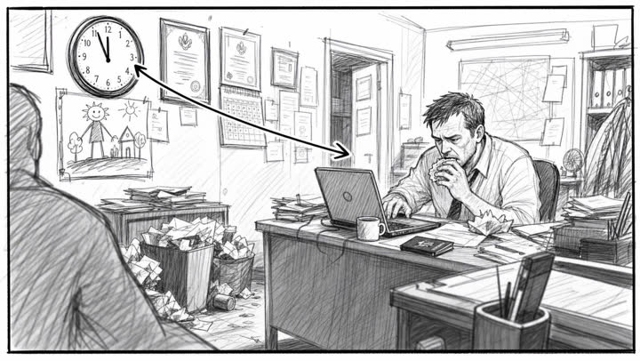
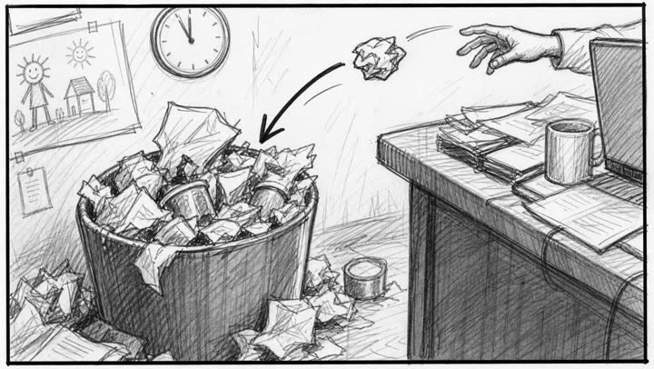
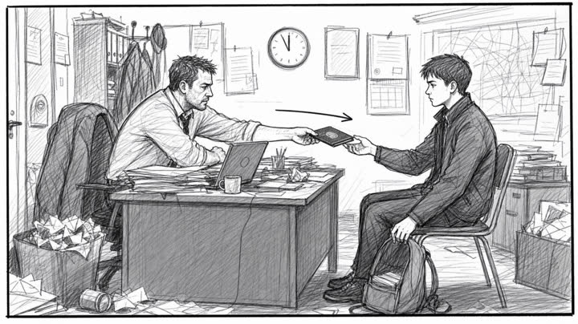
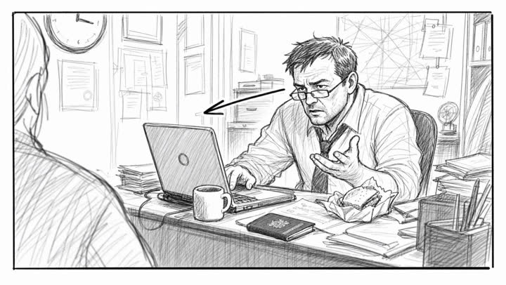
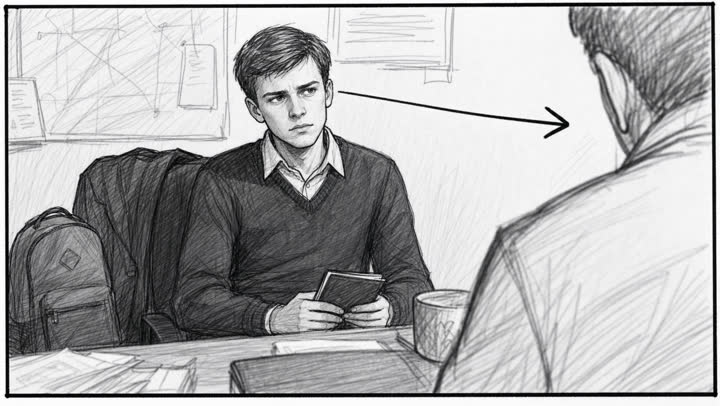
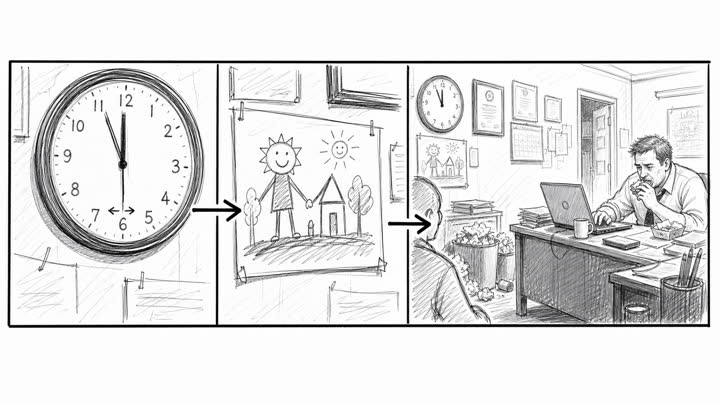
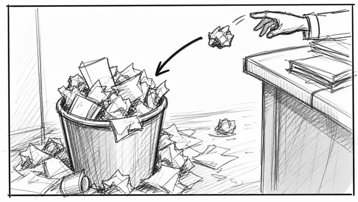
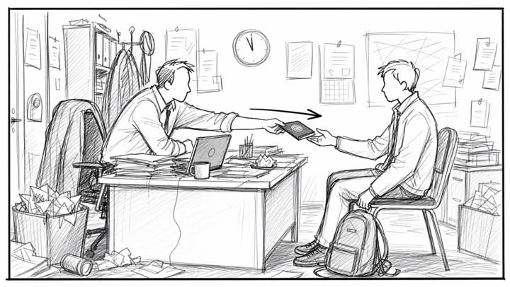
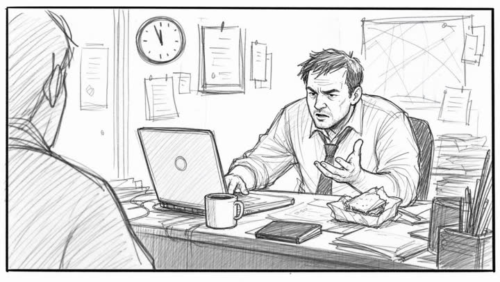
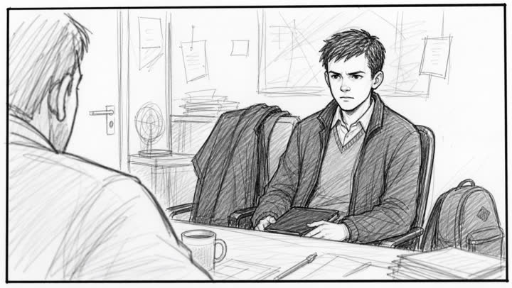

Коля
Двадцать четыре, точный, аккуратный, напряжённый. Его пластика принадлежит молодому повару, который пытается быть незаметным, пока контроль не превращается в удовольствие. Руки критически важны: пластырь, нож, поднос, перчатки, кровь.
Визуальная библия для ИИ-раскадровок
Рабочий визуальный язык для камерной хоррор-комедии о еде, вине, старых деньгах, полицейском люминесцентном свете и хищном свечном мраке.
ДНК рабочей книги
Excel-файл уже содержит режиссёрско-операторский сценарий по сценам. Эта библия переводит структуру в повторяемые визуальные решения для генерации новых собственных кадров и производственных презентаций.
Первый тестовый пакет
Классическая раскадровка по первым пяти кадрам из пайплайна: функциональная схема композиции, движения камеры, мизансцены и ключевых деталей без концепт-рендера.
| Визуализация | Номер кадра и что это за кадр |
|---|---|
|
 |
Сцена 1 · Кадр 1Отъезд от деталей стены к следователю за столом. Кадр заявляет часы, детский рисунок, календарь, грамоты, мусор и бытовой беспорядок, затем переводит внимание к следователю: он ест, печатает и пьёт чай. |
|
 |
Сцена 1 · Кадр 2Бумажка, брошенная следователем, летит в сторону переполненного мусорного ведра. Кадр фиксирует бытовой хаос кабинета: мусор, одноразовая посуда, смятые бумаги и грязный пол. |
|
 |
Сцена 1 · Кадр 3Общий боковой план разговора. Следователь передаёт Коле паспорт через стол, Коля аккуратно принимает его и готовится убрать в файл или рюкзак. Кадр задаёт географию допроса. |
|
 |
Сцена 1 · Кадр 4Разговорная восьмёрка: план на следователя. Он сидит за столом, раздражённо ведёт разговор с Колей, перед ним ноутбук, кружка, бумаги, сэндвич и рабочий беспорядок. |
|
 |
Сцена 1 · Кадр 5Разговорная восьмёрка: план на Колю. Он аккуратен, зажат и слегка обижен, держит себя сдержанно напротив следователя. В кадре читаются рюкзак, файл и дистанция между ним и столом. |
Второй стиль-проход
Версия v2 упрощает рисунок, снижает портретность и делает акцент на раскадровочной функции: мини-панели, блокинг, траектории движения и чистую читаемость кадра.
| Визуализация | Номер кадра и что это за кадр |
|---|---|
|
 |
Сцена 1 · Кадр 1 · v2Отъезд разложен на три фазы: часы, детский рисунок, затем следователь за столом. Такой вариант точнее передаёт логику движения камеры внутри одного сложного кадра. |
|
 |
Сцена 1 · Кадр 2 · v2Более чистый инсерт: бумажка летит в переполненное ведро. В кадре оставлены только траектория, ведро, край стола и мусор как смысловая фактура. |
|
 |
Сцена 1 · Кадр 3 · v2Общий боковой план стал более схематичным: две фигуры, стол между ними, паспорт как главное действие, стрелка передачи и читаемая география кабинета. |
|
 |
Сцена 1 · Кадр 4 · v2Разговорная восьмёрка на следователя без большой стрелки: важнее направление взгляда, плечо Коли на переднем плане, стол и рабочий беспорядок. |
|
 |
Сцена 1 · Кадр 5 · v2Разговорная восьмёрка на Колю: сдержанная поза, рюкзак и файл рядом, следователь как силуэт переднего плана. Кадр делает акцент на дистанции между ними. |
Библия персонажей
Каждый персонаж должен читаться сначала как силуэт, а затем как моральное давление. Визуально держим их приземлёнными, узнаваемо российскими и без глянца.
Двадцать четыре, точный, аккуратный, напряжённый. Его пластика принадлежит молодому повару, который пытается быть незаметным, пока контроль не превращается в удовольствие. Руки критически важны: пластырь, нож, поднос, перчатки, кровь.
Около сорока пяти, уставшая власть, тонкие очки, вокруг него офисно-пищевой распад. Он смешон, потому что слишком человеческий: чай, сэндвич, крошки, бумаги и кружка с нежной надписью в комнате, где всё говорит о гниении.
Хозяин старого мира, собранный и опасный. В его неподвижности должно быть больше скорости, чем в движении. Костюм аристократичный, но потёртый: человек, которого сохраняет не комфорт, а ритуал.
Элегантная, голодная, почти нежная до обращения. Трансформация начинается с пальцев и глаз раньше, чем с пасти: ужас должен оставаться интимным и физическим.
Присутствие книги и трости. Он двигается как учёный, который пережил любую комнату, в которую входит. Используем его для вертикалей, пауз и старой интеллектуальной надменности.
Яков раскрывается в грубую силу, Филипп в жажду, Граф в абсурдную власть. Кот не милое украшение: он невозмутимый свидетель и ритуальный переключатель.
Библия локаций
Локации должны быть фактурными и читаться даже в маленьких превью: кабинетный хаос, кухонная дисциплина, ритуал зала, холодное послесловие морга.
Низкий потолок, башни бумаг, настенные часы, детский рисунок, грамоты, грязные остатки еды, мёртвый люминесцентный воздух.
Контролируемый закат, чистые поверхности, руки в ритуальном движении, еда как ремесло до того, как станет уликой.
Свечи, тяжёлые шторы, овальный стол, портреты, тёмные коридоры, старая мебель, кот как центр тяжести.
Холодная неподвижность, простыни, бирки, клиническая геометрия и финальный абсурдный бит воскресения.
Цветовая система
Палитра движется между затхлым ведомственным светом и тёплой аристократической темнотой. Красный здесь событие сюжета, а не фон.
Грамматика камеры
Начинать с предметов и скользить к людям: часы, рисунок, мусор, сэндвич, рука, лицо. Движение камеры должно ощущаться как обнаружение улики.
Верхние точки, крупные руки, контролируемые панорамы, чистая геометрия. Готовка остаётся хореографией до момента, когда в смесь попадает кровь.
Широкие ритуальные композиции, внезапные хищные наезды и мизансцена вокруг овального стола. Углы держать достаточно тёмными, чтобы дом казался больше кадра.
Раскрывать через детали: зрачки, пальцы, зубы, касание плеча, тело, входящее в кадр слишком быстро. Первый испуг анатомический, а не взрывной.
ДНК промптов
Эти блоки можно использовать как постоянный слой для каждой генерируемой раскадровки, а затем добавлять сцену, крупность, мизансцену и действие из строки Excel.
Российская камерная хоррор-комедия, приземлённый кинематографический реализм, черновая производственная раскадровка, переведённая в аккуратный чёрно-белый концепт-кадр, фактурные интерьеры, выразительная мизансцена, практический свет, видимый моральный распад, без глянцевого фэнтези.
Тесный кабинет следователя, захламлённый стол, старые бумаги, переполненная мусорка, настенные часы застряли перед полуночью, детский рисунок, дешёвая кружка с чаем, тонкий люминесцентный свет, следователь ест во время работы, тревожная процедурная комедия.
Старый аристократический зал ночью, овальный стол при свечах, тяжёлые шторы, пыльные портреты великих мыслителей, красная жидкость в бокалах, присутствие кота-сфинкса, элегантные гости медленно становятся хищниками.
Точный молодой повар готовит красивые блюда на закате, крупно руки, нож, металлическая миска, кондитерская масса, контролируемая симметрия, тёплый свет сужается с наступлением ночи, еда становится ритуальной уликой.
Тонкая вампирская трансформация, увеличенные зрачки, появляющиеся клыки, пальцы вытягиваются в когти, голод заменяет манеры, интимный боди-хоррор, читаемый силуэт, сдержанная кровь, психологическое давление.
Без супергеройской стилистики, неонового киберпанка, чистого люксового ресторана, типового замка, комиксной заставочной страницы, чрезмерной крови, случайного современного брендинга и глянцевой модной съёмки.
Карта сцен
Первый проход генерации стоит направить на биты с сильным визуальным контрастом, практической производственной ценностью или риском по визуальным эффектам.